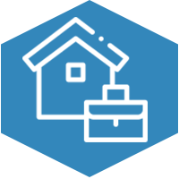

HOME > 윤리경영 > 복리후생
복리후생
오늘날 기업은 경쟁의 심화, 이해관계자의 다양화 등 급변하는 경영환경에 직면하고 있습니다. 기업의 가치를 평가할 때 고객, 임직원, 주주, 협력사, 지역사회 등 모든 이해관계자로부터 얼마나 깊은 신뢰를 얻고 있는 가는 매우 중요한 기준이 됩니다. 기업 스스로가 강력한 윤리기준을 수립하고 그것을 지속적으로 실천할 때에 진정한 신뢰를 쌓을 수 있습니다. 기업의 투명성과 신뢰를 바탕으로 한 윤리경영은 기업의 경쟁력 뿐만 아니라 지속 가능한 발전을 위한 핵심 요소입니다.
- 
- life support
- 포스코 케미칼 임직원 여러분 매일 우리 글로벌로 나아가는 회사를 위해 저희는 여러분들을 위해 직원들의 경제를 위해 대출을 기여하고 있으며, 임직원 여러분들의 가족을 위해 가족 경조사 지원(경조사비, 화환)을 보내드리고 임직원분들의 새롭게 나아갈 자녀를 위해 자녀 학자금 지원 (고등학교,대학교)를 지원해 드리고 있습니다. 포스코케미칼은 임직원 여러분들과 그 가족분들을 위해 삶과 건강에 공헌하기 위해 최선의 노력을 다하고 있습니다.
- health promotion
- 포스코 케미칼 임직원 여러분 매일 우리 글로벌로 나아가는 회사를 위해 저희는 여러분들의 건강을위해 직원들의 건강을 고려해 사내에 새롭고 청결한 운동시설을 완비 하였습니다.또한 임직원들 사내의 건강한 동호회를 위해 저희 포스코케미칼은 동호회의 경제적인 지원과 여러 프로그램을 갖추고 있습니다.포스코 가족분들을 위해 저희는 또 임직원뿐만아니라 임직원 가족 분들을 위해 건강검진을 할인을 하는 제도를 갖추고 임직원 여러분들 에게 공헌하기 위해 최선을 다하겟습니다.

- self-improvement
- 포스코케미칼은 임직원 여러분 매일 우리 글로벌로 나아가는 회사를 위해 저희는 여러분들을 위해 직원들의 계발을 위해 교육과정을 오프라인,온라인으로 제공하고 있습니다. 임직원분들이 월마다 자기계발 평가를 위해 저희는 어떠한 수단으로 통해 여러분들을 도와 같이 글로벌로 가는 기업으로 성장하고 싶습니다. 그러하여 자기계발을 성실히 임해주신 임직원분들을 대상으로 우수사원분들에게 포상과 휴가를 제공하고 있습니다.포스코케미칼을 이끌어주실 여러분들을 위해 도서대여및 구매를 지원하고 글로벌로 나아가는 여러분들을 위해 최선을 다하겟습니다.

- vacation system
- 포스코케미칼은 임직원 여러분 매일 우리 글로벌로 나아가는 회사를 위해 저희는 여러분들을 위해 직원들의 휴가제도를 들여 임직원분들이 조금이라 사내를 편안한 분위기를 조성 하여 임직원분들과 함께 글로벌로 나아가는 포스코가 되겟습니다. 저희는 임직원분들을 위해 편히 쉬는 날애 연극과뮤지컬 또는 운동 종목 티켓을 드리고 있습니다. 또한 열심히 저희위해 달려주신 임직원분들께 연차제도와 유급휴가,경조휴가,육아휴가,병가 등 신경쓰려고 노력하고 장기근속사원분들에게 포상 휴가와 연차 보상을 드리겟습니다. 포스코케미칼을 이끌어주실 여러분에게 공헌하기 위해 최선을 다하겟습니다.